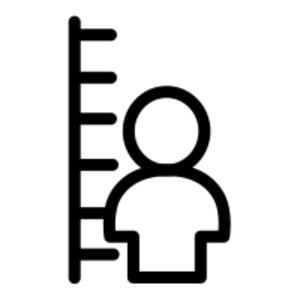

ϫⲁⲃϫⲓⲃ B nn, small in stature: MG 25 4 ⲟⲩⲣⲱⲙⲓ…ⲉϥⲟⲓ ⲛϫ. μικροφανής haud grandis homunculus.
(noun)
small in stature

complete
760b
See also:
| view | ϭⲱϫⲃ, ϭⲱϫϥ S ϭⲱϫⲉⲃ SF ⲕⲟⲩϫⲃ (nn) S ϭⲱϫⲃⲉ AL ϫⲱϫⲉⲃ B ϭⲉϫⲃ- S ϭϫⲃⲉ- A ϫⲉϫⲉⲃ- B ϭⲟϫⲃ⸗ S ϭⲁϫⲃ⸗ Sa ϭⲟϫⲃ† , ϭⲁϫⲃ† , ϭⲟϫϥ† S ϭⲁϫϥ† SfF ϭⲁϫⲃⲉ† AL ϫⲟϫⲉⲃ† B ϭⲁϭϥ† , ϫⲁϫⲉϥ† F p c ϫⲁϫⲉⲃ- B | (verb) intr: be small, less, humble [ελαττονειν, ηττασθαι]
qual: [μικρος, ασθενης] tr: lessen [ελαττουν, κολοβουν]226 |
| view | ⲕⲟⲩⲓ SAFO ⲕⲟⲩⲉⲓ L ⲕⲟⲩϫⲓ B ⲕⲟⲩϭⲓ F ⲕⲟⲟⲩⲉⲓ NH ⲕⲟⲩ- SF ⲕⲁ-, ⲕⲟ- F | (noun male/female) small person or
thing, young person [μικρος, ολιγος, νηπιος]
adjective ― small ― few ― young advb ― ⲛⲟⲩⲕ., a little [μικρον, ολιγον] ― ⲡⲕⲉⲕ., ⲕⲉⲕ, yet a little ― ⲙⲛⲛⲥⲁⲟⲩⲕ., after a little ― ϩⲁ-, ϧⲁ-, ϩⲓⲑⲏ ⲛⲟⲩⲕ., a little before ― ϣⲁⲧⲛⲟⲩⲕ. S mostly ⲡⲁⲣⲁ, almost ― ⲡⲣⲟⲥ ⲟⲩⲕ., for a little ― ⲕⲁⲧⲁ ⲕ., occasionally ― ⲕⲟⲩⲓ ⲕⲟⲩⲓ, ⲛⲕ. ⲕ., little by little61 |
| view | ϩⲓⲃⲉ S ϩⲉⲃⲓ B ϩⲟⲃⲉ† S ϩⲁⲃⲉ† SL | (verb) intr: be low, short [ταπεινουσθαι]2122 |
| view | ϣⲏⲙ SLBFO ϣⲙ S ϩⲏⲙ, ϩⲙ Sa ⳉⲏⲙ A | (noun) small person, thing,
quantity [μικρος, ολιγος]
as adj, small, few, young, humble iterated, little by little [κατ ολιγον, κατ μικρον]62 |
| view | ϭⲁϫⲓϥ SA ϭⲁϫⲓⲃ, ⲕⲁϫⲓϥ S ϫⲁϥϫⲓϥ, ϫⲁⲡϫⲓⲡ, ϫⲉϥϫⲓϥ, ϫⲉⲃϫⲓⲡ B | (noun male/female) (f once), ant [μυρμηξ]2655 |